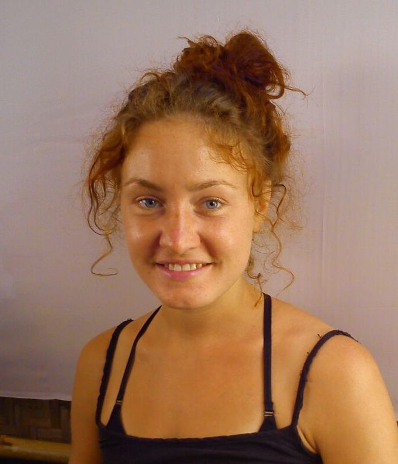

Ahoi & herzlich willkommen in meiner Näh-Welt, in meinem digitalen Zuhause
mit vielen Sachen, die mich glücklich machen und die ich gerne mit euch teilen
möchte!
Mein Name ist Friederika oder eben freduscha.Ich bin am wunderschönen Bodensee
als Älteste von 5 Kindern aufgewachsen. Kreatives und handwerkliches Arbeiten
hatte stets einen festen Platz in meinem Leben und hat es immer noch. Während
meiner Kindheit war ich als Zeitungsherausgeberin, Töpferin und Pferde-mit-
Geschichten-Malerin aktiv und heute als Schneiderin und Bastlerin.
Ab der 10. Klasse bekam ich die wundervolle Gelegenheit parallel zum Abitur
eine handwerkliche Ausbildung zu beginnen. Challenge accepted :) … und so
begann meine Reise in die Schneiderei.
Mit dem Gesellenbrief und dem Abitur in der Tasche ging es weiter nach Hamburg:
Großstadt und weit weg von zuhause. Doch egal, wie chaotisch die Umstände waren,
das kreative Schaffen und Basteln war stets ein großer Teil von mir.
Während meines Auslandssemesters merkte ich schnell: Es fehlt was. Ja! Und das
war meine riiiesen-Bastelbox, meine Nähmaschine und die schönen inspirierenden
Kreativkaufhäuser. Doch ich wusste mir zu helfen: Karten aus Verpackungskarton.
Upcycling, Wiederverwertung und kreativ sein – olé!
Der Grundstein für meine Kartenproduktion war gelegt. Zurück in Hamburg bekam
ich dann die Gelegenheit, meine Karten in einer tollen Bücherei zu verkaufen.
Das laufende Geschäft unterbrach ich für meine Reise nach Indien. Dort folgte
ich meiner zweiten großen Leidenschaft: Yoga üben. Dazu vielleicht ein andermal
mehr in meinem Verteiler.
Zurück in Deutschland zog es mich dann nach ins bunte wilde Berlin. Und dann
endlich: das erste richtige Gehalt! Damit erfüllte ich mir einen langersehnten
Traum: eine Pfaff-Nähmaschine.
Auf der neuen Nähmaschine macht Nähen noch mehr Spaß und recht schnell wurde
freduscha geboren. Und mein Kartensortiment erweiterte sich um nützliche und
schöne Schneiderwerke.
Angefangen habe ich mit Kosmetik-Kram-Täschchen, gefolgt von hippen Bauchtaschen,
schicken veganen Lederimitattaschen und durchsichtigen Flugzeugbeutelchen mit
dem gewissen Etwas. Pullis, Schlüppies und Masken kamen hinzu … und das Sortiment
lebt von euren Ideen und erweitert sich ständig. Gleichzeitig sind natürlich
allerlei sinnige und unsinnige Karten ein enorm wichtiger Teil von freduscha.
Feste, Gedanken und Beobachtungen nehmen dadurch (glitzernde) Form an …
Ich produziere in Berlin und verschicke europaweit.
Inspiriert euch, inspiriert mich!
Du hast Interesse, Ideen oder Fragen? Ich freue mich von Dir zu hören.
Stay happy & healthy!
Love
F
P.S.: Lust auf regelmäßige news outta my (Näh-)life? Push the
bottom … and let me know :)
